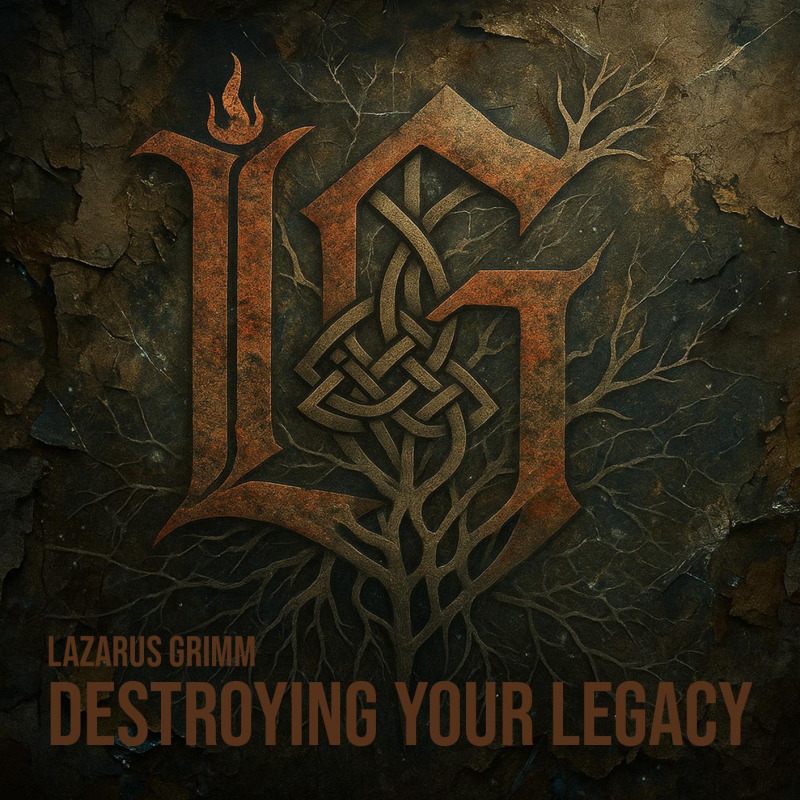

Destroying Your Legacy
Released August 1, 2025 · Lazarus Grimm
Destroying Your Legacy is my debut full-length, and it doesn’t ease you in. This is an album about surviving what should have broken me — a fractured home, a stepfather whose violence hid behind a Bible and a Sunday smile, six years lost in chemical wreckage, and the slow, hard climb back to something worth living for. It opens with a confession and closes with a blessing, and everything in between is the road that connects them.
The album turns outward as quickly as it turns inward. It’s a record for everyone who grew up in a church that weaponized scripture against the wounded, for women who have been shamed from pulpits, for survivors of religious abuse who were told that God looked like their abuser. “Cast the First Stone,” “You Called Her Out,” and “Just As You Are” are direct, unflinching confrontations with performative Christianity — the kind that passes judgment while burying its own sin, the kind that isolates a woman from her family and calls it ministry.
But Destroying Your Legacy is also a love record. For my wife. For a God who showed up in the wilderness when nothing else did. For the life I rebuilt from nothing. “Thank You” sits at the album’s emotional center — not comfortable praise, but gratitude that is hard-won, specific, and deeply felt. And the title track is the album’s gut punch: a direct address to my stepfather, narrating the violence of my childhood, the plan that was made and nearly carried out, and the forgiveness that wasn’t for him — it was for my survival.
This album is for listeners who grew up in toxic religious environments, who survived domestic abuse or witnessed it, who wrestle with faith because faith was used against them. And who are still here.
Destroying Your Legacy is heavy and stays heavy. Drawing from the dark, churning weight of Korn and the theologically fierce screamed conviction of Oh Sleeper, this is drop-tuned, groove-driven metal with a rap cadence running through its veins. The production is dense and confrontational — distorted low-end riffs, aggressive vocal shifts between rapped verses and raw melodic hooks, and just enough space in the quieter moments to make the heavy sections hit like they mean it. This is music that takes up space because it has earned the right to.
- I Am Lazarus Grimm My origin story. A broken home, a door closed at sixteen, years lost in addiction, and the moment something reached down and pulled me back. Not an introduction — a testimony. This is who I am and how I got here, delivered without apology.
- Cast the First Stone Born from my own experience with religious hypocrisy and written for everyone who has lived it too. I’ve watched people weaponize scripture against the wounded while hiding their own sin behind a pulpit. This is a direct rebuke — rooted in the story of the woman caught in adultery — for everyone who has ever thrown a stone in God’s name while forgetting who stopped the execution.
- Connected Through All Things The clearest statement of my faith on the entire album. Drawing on the Hebrew names of God — Yahweh, Ruach HaKodesh, Ruach Elohim, Immanuel — alongside the elements of wind, fire, water, and stone, this song is the outline of my Christian Druid faith: a spirituality that finds the Divine in scripture and in the wild, in the ancient names and in the living earth. Grounding the album’s anger in something older than the systems that caused it.
- You Called Her Out Written directly from the wound a specific church inflicted on my wife before she and I ever met — publicly shaming her, poisoning her family relationships, and calling it ministry. This is not a general critique of religious hypocrisy. It is a personal confrontation from a man who learned what was done to the woman he loves and refused to let it go unanswered. I wasn’t there when it happened. If I had been, it wouldn’t have happened.
- Thank You My gratitude anchor. Not comfortable praise music — this is thanks forged from nearly losing everything: sobriety, family, a home that finally feels like one. Almost twenty years clean. A wife who makes my heart sing. Paid bills. Small miracles named out loud.
- Serpent of Control A spiritual warfare song written as a prayer of deliverance over my wife in a moment of real spiritual and psychological battle. Raw and liturgical at once, closing in Hebrew prayer spoken directly over her.
- Destroying Your Legacy The title track and the album’s center of gravity. I address my stepfather directly — his violence, his house of fear, the day I had a plan, had the steel in my hand, had his name on the bullet. And the moment God stopped me. The forgiveness that followed wasn’t absolution for him — it was my freedom. I own every moment of that story — the wound, the plan, the choice, and the survival. The legacy being destroyed isn’t the family name. It’s the cycle.
- Vanish in the Mist I have witnessed what men do when they think love means control. This song is for them — and for every woman who has hidden bruises under long sleeves and called it a fall. There is no nuance here, no sympathy extended. Vengeance belongs to God. And men who hit women fade into nothing.
- Voices in the Mirror Written for any woman still inside an abusive relationship. Verse by verse it names the tactics — gaslighting, false apology, isolation, the slow erosion of self. I wrote this because I know what that looks like up close, and because silence about it has never helped anyone. This is a song pointing toward the exit.
- Just As You Are This one comes from my own experience of having God weaponized against me — and it’s written for everyone who has been handed a theology of fear and told it was love. God speaks directly here, dismantling every lie religion used to keep us small, and replacing it with something that actually looks like Him.
- God Is With Us My closing blessing over everything that came before it. In Hebrew and English, calling down protection and presence over my family and my home. A benediction.